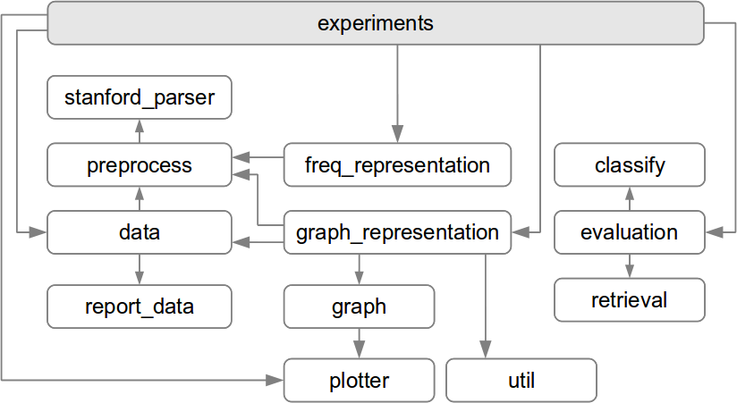

The figure below presents the architecture - the modules and how they interact. The rounded rectangles represents python modules. Directed arrows represent interconnections between modules, i.e. references made by import statements.
The experiments module is not quite like the others. First, it is not a functional module, but rather the glue that keeps everything together. This is the module that utilize the other modules in order to perform the various experiments. Second, it is not really one module, but rather a collection of *_experiments.py files, containing experiments concerning the various representations. Of the connections from experiments to the other modules in the figure, only the most important ones are shown to avoid cluttering the diagram. The contents of this “module” are described in the section discussing the experiments.
The util module is used by many of the modules. Also here have we left out the dependencies in order do avoid cluttering. The module contains miscellaneous utility functions that does not naturally fit into any of the other modules.
The three leftmost modules, preprocess, data, and report_data, are responsible for reading and doing textual preprocessing of the cases. data handles all file I/O, and utilize preprocess to make the necessary changes to the text. All preprocessing tasks are done by preprocess itself, except dependency parsing which is handled by stanford_parser. The report data is used by data to retrieve textual cases from HTML-formatted documents in the AIR dataset.
The middle column of modules handles representation of documents as feature vectors. freq_representation represents documents as TF and TF-IDF vectors, while graph_representation builds networks from the text and create vectors based on node centrality. The actual graph data structures and functions are contained in graph. The plotter module is used to visualize the networks.
The three modules on the right are used to evaluate the feature vectors created by the above modules. The two evaluation methods described are implemented in classify and retrieval evaluate provide an interface to these.
{kind=link}